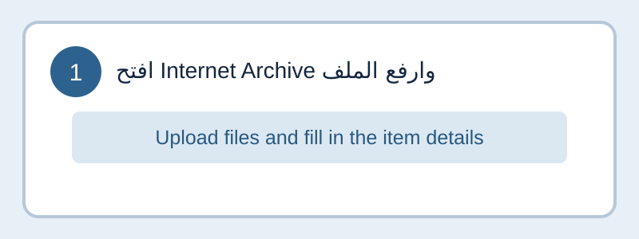
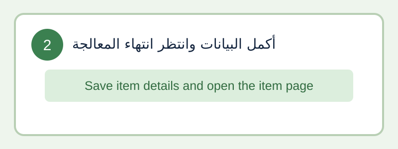
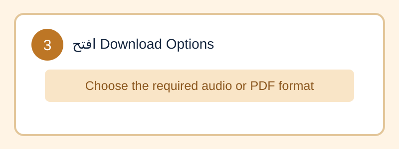
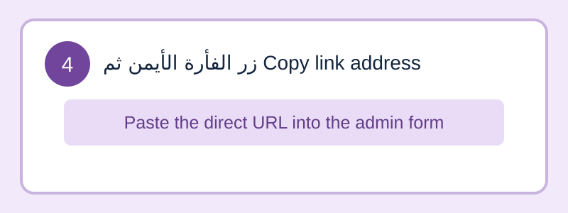

إدارة المواد العلمية والتصنيفات والعناصر المستقبلية وفق الصلاحيات (RBAC).
أضف مواعيد المحاضرات أو عدّلها. تظهر المحاضرات المنشورة لزوار الموقع خلال أسبوعها.
دليل الروابط المباشرة
استخدم رابطًا عامًا مباشرًا؛ لا تستخدم رابط صفحة المعاينة. افتح القسم المناسب للاطلاع على الخطوات المصورة.




يجب أن يكون الملف عامًا؛ الروابط التي تتطلب تسجيل الدخول لن تعمل للمستخدمين.
الخطوة 1 من 3: المعلومات الأساسية
العنوان مطلوب.
المؤلف مطلوب.
اختر تصنيفاً.
الخطوة 2 من 3: نوع الملف والمحتوى
افصل بين الكلمات بفاصلة.
ستُحسب تلقائيًا عند إدخال رابط صوت مباشر، ويمكن تعديلها يدويًا عند تعذر القراءة.
اختر ملفًا صوتيًا لرفعه مباشرة إلى R2؛ سيُضاف الرابط فائق السرعة تلقائيًا دون حد الـ 90MB.
اختر ملف PDF لرفعه مباشرة إلى Cloudflare R2 دون قيود الحجم الضيقة.
يُنشأ تلقائياً كنسخة احتياطية في أرشيف الإنترنت عند نشر المادة، أو يمكنك إدخال رابط أرشيف احتياطي يدويًا لتفعيل التبديل التلقائي (Failover).
الخطوة 3 من 3: النص والحفظ
يمكن إضافة نص للمقال مع الملف الصوتي في الصفحة نفسها؛ افصل الفقرات بأسطر فارغة.
هذه قيم البداية التي يراها المستخدم. يستطيع القارئ تعديلها بسهولة من صفحة المادة.
تظهر المادة المنشورة للزوار في الموقع.
8+ أحرف مع رقم وحرف كبير.
لا توجد سجلات.